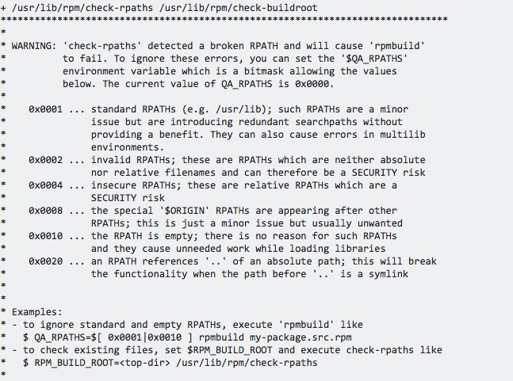

制作nginx和php的rpm包
rpm包的制作真几把烦，制作php的rpm花了我3天时间，因为是根据线上环境来做的，依赖的第三方库太多，本来想把所有的第三方库做进php包，后来发现在rpmbuild -bb的时候非常耗时，而且乱七八糟的错满天飞，好不容易全部解决了第一次成功第二次又不行了，因此决定能用yum安装的就用yum安装，没有的才用源码。
1.安装rpm-build和rpmdevtools
yum install rpmdevtools rpm-build
2.生成制作rpm包的必备目录，没有安装rpmdevtools则无法使用以下命令
cd ~
rpmdev-setuptree
此时，你的家目录中有一个rpmbuild文件夹，里面有5个文件夹，分别是SPEC,SOURCE,RPMS,BUILD,SRPMS。spec文件夹存放书写生成rpm包的文件，rpms存放生成的rpm包，build存放生成rpm包过程中产生的文件，SRPMS存放srpm包，source存放源码文件和你要装入系统的文件
3.生成过程
将nginx/php的源码包、配置文件，init.d中的启动文件放入source目录下，进入spec文件夹，写spec文件
nginx.spec
%define nginx_user nginx #after compile no dependies check AutoReqProv: no Name: tengine Version: 2.1.2 Release: 1%{?dist} Summary: Tengine from taobao Group: System Environment/Daemons License: GPLv2 URL: http://www.nginx.org/downloads/nginx-1.2.1.tar.gz Source0: %{name}-%{version}.tar.gz Source1: tengine.init #Source2: pcre-8.32.tar.gz BuildRoot: %{_topdir}/BUILDROOT/%{name}-%{version}-%{release} BuildRequires: gcc,make #Requires: pcre,pcre-devel,openssl,openssl-devel,zlib,zlib-devel #Requires(post): info #Requires(preun):info %description nginx from taobao %prep %setup -q %build export DESTDIR=%{buildroot} ./configure\ --prefix=/usr/local/sina_mobile/tengine\ --sbin-path=/usr/local/sina_mobile/tengine/sbin/nginx\ --conf-path=/usr/local/sina_mobile/tengine/conf/nginx.conf\ --error-log-path=/usr/local/sina_mobile/tengine/logs/error.log\ --http-log-path=/usr/local/sina_mobile/tengine/logs/access.log\ --pid-path=/usr/local/sina_mobile/tengine/logs/nginx.pid\ --http-client-body-temp-path=/usr/local/sina_mobile/tengine/client_body_temp \ --http-proxy-temp-path=/usr/local/sina_mobile/tengine/proxy_temp \ --http-fastcgi-temp-path=/usr/local/sina_mobile/tengine/fcgi_temp \ --http-uwsgi-temp-path=/usr/local/sina_mobile/tengine/uwsgi_temp \ --http-scgi-temp-path=/usr/local/sina_mobile/tengine/scgi_temp \ --user=%{nginx_user}\ --group=%{nginx_user}\ --with-http_ssl_module \ --with-http_stub_status_module \ --with-http_gzip_static_module \ --with-http_realip_module\ --with-pcre=/usr/local/src/pcre-8.32\ --with-openssl=/usr/local/src/openssl-1.0.1t\ --with-zlib=/usr/local/src/zlib-1.2.8 # --with-pcre make %{?_smp_mflags} %install rm -rf %{buildroot}%{_infodir}/dir make install DESTDIR=%{buildroot} install -p -D -m 0755 %{SOURCE1} %{buildroot}/etc/rc.d/init.d/nginx #install -p -D -m 0755 %{SOURCE2} %{buildroot}/usr/local/src/pcre-8.32.tar.gz #install -p -d -m 0755 %{buildroot}/usr/local/nginx/sbin #install -p -d -m 0755 %{buildroot}/usr/local/nginx/conf #install -p -d -m 0755 %{buildroot}/usr/local/nginx/log %pre if [ $1 == 1 ];then /usr/sbin/useradd -s /bin/false -r %{nginx_user} 2>/dev/null || : fi %post if [ $1 == 1 ];then /sbin/chkconfig --add nginx /sbin/install-info %{_infodir}/%{name}.info %{_infodir}/dir 2>/dev/null || : fi %preun if [ $1 == 0 ];then /sbin/service nginx stop > /dev/null 2>&1 /sbin/chkconfig --del nginx /usr/sbin/userdel -r %{nginx_user} 2> /dev/null /sbin/install-info --delete %{_infodir}/%{name}.info %{_infodir}/dir 2>/dev/null || : fi %postun rm -rf /usr/local/sina_mobile/tengine/sbin rm -rf /usr/local/sina_mobile/tengine/conf rm -rf /usr/local/sina_mobile/tengine/*_temp rm -rf /usr/local/sina_mobile/tengine/include rm -rf /usr/local/sina_mobile/tengine/html rm -rf /usr/local/sina_mobile/tengine/modules #rm -rf /usr/local/src/pcre-8.32 rm -f /etc/rc.d/init.d/nginx %clean rm -rf %{buildroot} %files %defattr(-,root,root,-) #/usr/local/src/pcre-8.32 /usr/local/sina_mobile/tengine/* %attr(0755,root,root) /etc/rc.d/init.d/nginx %changelog * Fri Jul 5 2016 laoguang <weijing@qq.com> - 2.1.2-1.el6 - Initial version
rpmbuild -bb nginx.spec即可生成rpm包
php.spec
%define php_path /usr/local/sina_mobile/php538 %define dep_path /usr/local/sina_mobile %define debug_package %{nil} AutoReq: 0 #AutoProv: 0 Name: sinabook-php Version: 5.3.8 Release: 1%{?dist} Summary: PHP is a server-side scripting language for creating dynamic Web page Group: System Environment/Daemons License: GPLv2 URL: http://www.php.net/downloads/php-5.6.8.tar.gz Source0: %{name}-%{version}.tar.gz #Source1: php-fpm Source2: php-fpm.conf Source3: php538.ini BuildRoot: %{_topdir}/BUILDROOT/%{name}-%{version}-%{release} BuildRequires: gcc,gcc-c++,make,cmake,ncurses-devel,bison,openssl-devel,libcurl-devel,gdbm-devel,openldap-devel,libtidy-devel,zlib-devel,libxml2-devel,pcre-devel,freetype-devel,libmcrypt-devel,libjpeg-devel,libpng-devel,libXpm-devel #Requires: sinabook-mysql,sinabook-libiconv #Requires: sinabook-gd >= 2.1.0 %description PHP is a widely-used general-purpose scripting language that is especially suited for Web development and can be embedded into HTML. %prep %setup -q %build ./configure\ --prefix=%{php_path} \ --with-config-file-path=%{php_path}/lib \ --with-config-file-scan-dir=%{php_path}/lib/php.d \ --with-curl \ --with-mhash \ --with-xmlrpc \ --with-tidy \ --with-ldap \ --with-pear \ --with-gdbm \ --with-openssl \ --with-gettext \ --with-zlib \ --with-mcrypt \ --with-iconv=%{dep_path}/libiconv \ --with-gd=%{dep_path}/gd\ --with-jpeg-dir\ --with-png-dir\ --with-freetype-dir\ --with-libXpm-dir=/usr/lib64\ --with-mysql=%{dep_path}/mysql \ --with-mysqli=%{dep_path}/mysql/bin/mysql_config \ --with-pdo-mysql=/usr/local/sina_mobile/mysql \ --enable-fpm --enable-mbstring --enable-zip --enable-soap --enable-sysvsem --enable-shmop --enable-sockets --enable-ftp --enable-gd-native-ttf --enable-bcmath --enable-pcntl --enable-maintainer-zts make %{?_smp_mflags} %install rm -rf %{buildroot} rm -rf %{buildroot}/{.channels,.depdb,.depdblock,.filemap,.lock,.registry} make install INSTALL_ROOT=%{buildroot} mkdir -p %{buildroot}%{_initrddir} rm %{buildroot}/%{php_path}/bin/phar ln -sf %{php_path}/bin/phar.phar %{buildroot}/%{php_path}/bin/phar #install -p -D -m 0755 %{SOURCE1} %{buildroot}%{_initrddir}/php-fpm install -p -D -m 0644 %{SOURCE2} %{buildroot}%{php_path}/etc/php-fpm.conf install -p -D -m 0644 %{SOURCE3} %{buildroot}%{php_path}/etc/php.ini #Grep reports BUILDROOT inside our object files; disable that test. QA_SKIP_BUILD_ROOT=1 QA_RPATHS=$[ 0x0001|0x0010 ] export QA_SKIP_BUILD_ROOT export QA_RPATHS %clean rm -rf %{buildroot} %post if [ $1 == 1 ];then /sbin/chkconfig --add php-fpm /sbin/chkconfig php-fpm on fi %preun if [ $1 == 0 ] ; then /sbin/service php-fpm stop > /dev/null 2>&1 /sbin/chkconfig --del php-fpm fi #%postun #if [ $1 == 0 ] ; then # /bin/rm -rf %{php_path} #fi %files %defattr(-,root,root,-) %{php_path} #%config(noreplace) %{php_path}/etc/php-fpm.conf #%config(noreplace) %{php_path}/etc/php.ini #%attr(0755,root,root) /etc/rc.d/init.d/php-fpm %exclude /.channels %exclude /.depdb %exclude /.depdblock %exclude /.filemap %exclude /.lock %changelog * Thu Jul 21 2016 weijing <645509024@qq.com> - 5.3.8-1.el6 - Initial version
php-fpm里面关于php的路径需要修改为实际安装的路径，此文件在源码包的support-files中有
php-fpm.conf将pid，log等几个参数的注释去掉，然后就能启动了
使用此php包的前提是已经安装了mysql，并且系统能找到libmysqlclient.so.18

mysql.spec
%define mysql_user mysql %define mysql_group mysql %define debug_package %{nil} AutoReq: 0 Name: sinabook-mysql Version: 5.5.29 Release: 1%{?dist} Summary: database Group: System Environment/Daemons License: GPLv2 URL: http://www.mysql.com/downloads/%{name}-%{version}.tar.gz Source0: %{name}-%{version}.tar.gz Source1: mysql3306.cnf Source2: mysql BuildRoot: %{_topdir}/%{name}-%{version}-%{release}-XXXXXX) BuildRequires: gcc-c++,ncurses,ncurses-devel,bison,cmake,zlib %description %prep %setup -q %build cmake -DCMAKE_INSTALL_PREFIX=/usr/local/sina_mobile/mysql -DWITH_MYISAM_STORAGE_ENGINE=1 -DWITH_INNOBASE_STORAGE_ENGINE=1 -DWITH_ARCHIVE_STORAGE_ENGINE=1 -DWITH_BLACKHOLE_STORAGE_ENGINE=1 -DWITH_MEMORY_STORAGE_ENGINE=1 -DWITH_PARTITION_STORAGE_ENGINE=1 -DWITH_PERFSCHEMA_STORAGE_ENGINE=1 -DWITH_PIC=0 -DWITH_READLINE=1 -DWITH_DEBUG=0 -DENABLED_LOCAL_INFILE=1 -DEXTRA_CHARSETS=all -DDEFAULT_CHARSET=utf8 -DDEFAULT_COLLATION=utf8_general_ci -Wno-dev make %{?_smp_mflags} %install rm -rf %{buildroot} make install DESTDIR=%{buildroot} install -p -D -m 0755 %{SOURCE1} %{buildroot}/data/mysql3306/mysql3306.cnf install -p -D -m 0755 %{SOURCE2} %{buildroot}/etc/init.d/mysql %pre if [ $1 == 1 ];then /usr/sbin/groupadd mysql /usr/sbin/useradd -r %{mysql_user} -M -g %{mysql_group} -s /bin/false 2>/dev/null || : fi %post if [ $1 == 1 ];then /bin/chown -R mysql:mysql /usr/local/sina_mobile/mysql /usr/local/sina_mobile/mysql/scripts/mysql_install_db --user=mysql --basedir=/usr/local/sina_mobile/mysql --datadir=/data/mysql3306 /bin/chown -R root /usr/local/sina_mobile/mysql /bin/chown -R mysql /data/mysql3306 #/bin/cp /usr/local/sina_mobile/mysql/support-files/mysql.server /etc/init.d/mysql #/bin/sed -i "s@^basedir=@basedir=/usr/local/sina_mobile/mysql@g;s@^datadir=@datadir=/data/mysql3306@g;s@conf=/etc/my.cnf@conf=/data/mysql3306/mysql3306.cnf@g" /etc/init.d/mysql #/bin/chmod 755 /etc/init.d/mysql /sbin/chkconfig --add mysql #/bin/echo "PATH=$PATH:/usr/local/sina_mobile/mysql/bin" >/etc/profile.d/mysql.sh #source /etc/profile.d/mysql.sh #/bin/echo "/usr/local/sina_mobile/mysql/lib" > /etc/ld.so.conf.d/mysql.conf #/sbin/ldconfig > /dev/null 2>&1 /bin/ln -s /data/mysql3306/mysql3306.sock /tmp/mysql.sock 2>/dev/null /bin/ln -s /usr/local/sina_mobile/mysql/bin/* /usr/local/bin/ /bin/ln -s /usr/local/sina_mobile/mysql/scripts/* /usr/local/bin/ /sbin/install-info %{_infodir}/%{name}.info %{_infodir}/dir 2>/dev/null || : fi %preun if [ $1 == 0 ];then /sbin/service mysql stop > /dev/null 2>&1 /sbin/chkconfig --del mysql #/usr/sbin/userdel -r %{mysql_user} 2> /dev/null #/usr/sbin/groupdel %{mysql_user} 2> /dev/null /sbin/install-info --delete %{_infodir}/%{name}.info %{_infodir}/dir 2>/dev/null || : fi %postun #rm -rf /etc/profile.d/mysql.sh #rm -rf /etc/ld.so.conf.d/mysql.conf rm -rf /tmp/mysql.sock rm -rf /usr/local/bin/mysql* rm -rf /usr/local/bin/myisam* rm -rf /usr/local/bin/resolve* rm -rf /usr/local/bin/{innochecksum,msql2mysql,my_print_defaults,perror,replace} rm -rf /usr/local/sina_mobile/mysql/* rm -rf /etc/init.d/mysql %clean rm -rf %{buildroot} %files %defattr(-,root,root,-) /usr/local/sina_mobile/mysql/* /data/mysql3306/mysql3306.cnf %attr(0755,root,root) /etc/init.d/mysql %doc %changelog * Thu Jul 21 2016 weijing <645509024@qq.com> - 5.5.29-1.el6 - Initial version
全部搞定，搞了爸爸一周，不过感觉对于包管理和rpm打包的流程清晰了很多，可能以后安装别的包发生了dependence错误会更清楚的知道哪里出了问题
附上友情链接：
[制作php的rpm包]http://blog.digitalstruct.com/2011/12/21/rpm-packaging-building-and-deploying-your-own-php/
[制作nginx的rpm包]http://www.centoscn.com/image-text/config/2014/1201/4215.html
[rpm包出错的解决方法]http://www.bkjia.com/Linuxjc/1088197.html
[rpm包每个字段的解释]http://ju.outofmemory.cn/entry/95476
[fedora的官方文档]http://fedoraproject.org/wiki/How_to_create_an_RPM_package